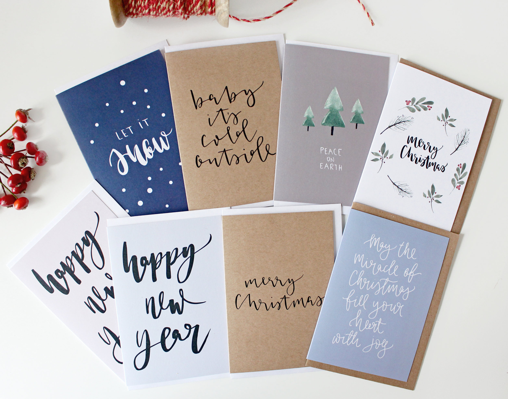
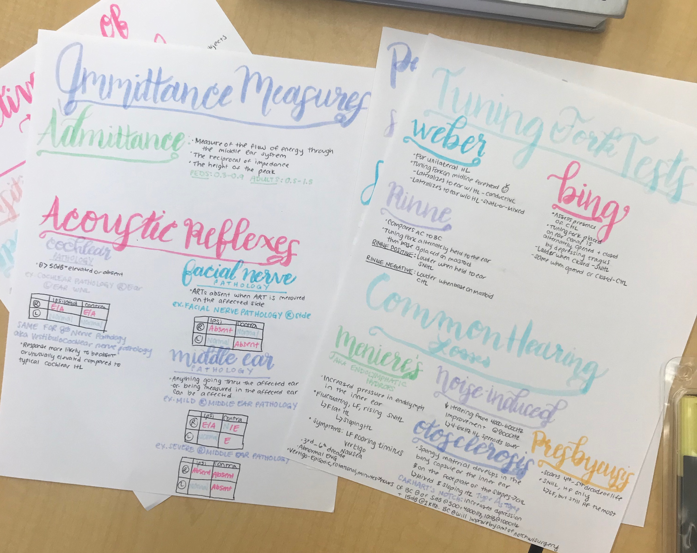

1) Make Visually Pleasing Cards for your Friends
2) Increase the Aesthetic Value of your Notes
 This website was created by the author from his interest in Brush Calligraphy and for the module AED23M. Feel free to drop the author an email if you have any further questions!
Click here to drop him an email!!!